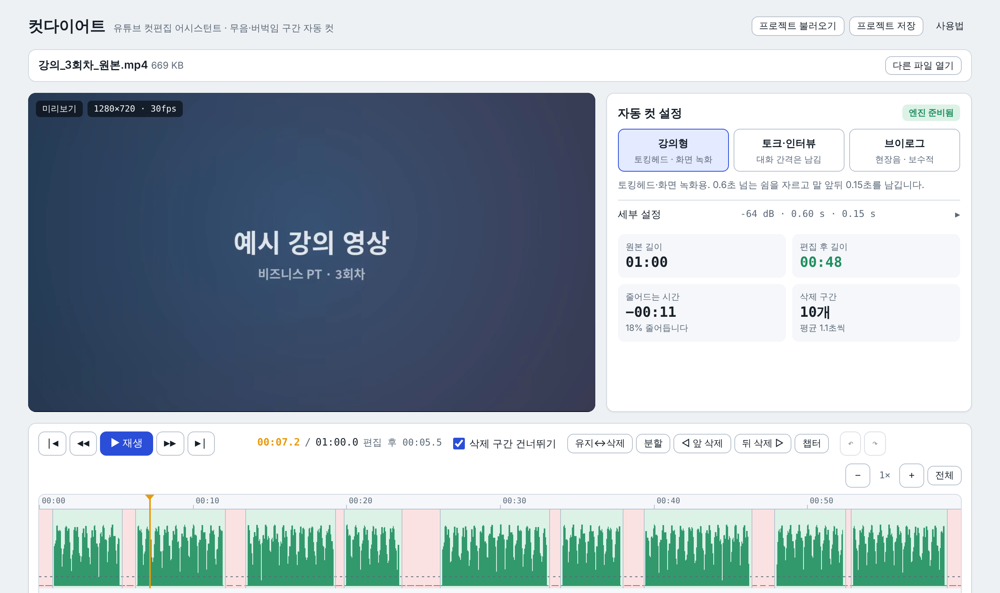
데스크톱 크롬이나 엣지에서 열면 모든 기능이 됩니다. 휴대폰과 사파리에서는 분석까지만 되고 MP4 만들기는 안 될 수 있습니다.
| 항목 | 내용 |
|---|---|
| 잘 맞는 영상 | 혼자 말하는 강의, 화면 녹화 설명, 브이로그 내레이션, 인터뷰 |
| 안 맞는 영상 | 촬영 때부터 배경음악이 깔린 영상, 여러 명이 동시에 말하는 영상, 현장음이 큰 영상 (배경음악은 여기서 나중에 깔 수 있습니다) |
| 길이 | 10분 안팎이 가장 쾌적, 30분까지 무리 없음. 1시간이 넘으면 분석과 편집 프로그램용 파일만 만들어집니다 |
| 파일 형식 | MP4, MOV, WebM, MKV. 음성만 있는 파일(MP3·WAV·M4A)도 가능 |
| 영상은 어디로 | 어디에도 올라가지 않습니다. 결과 파일은 내가 고른 위치(또는 다운로드 폴더)에만 저장됩니다 |
| 처음 열 때 | 3단계 안내가 한 번 뜨고, 예시 데이터가 채워져 있습니다. 내 영상을 넣으면 바뀝니다 |
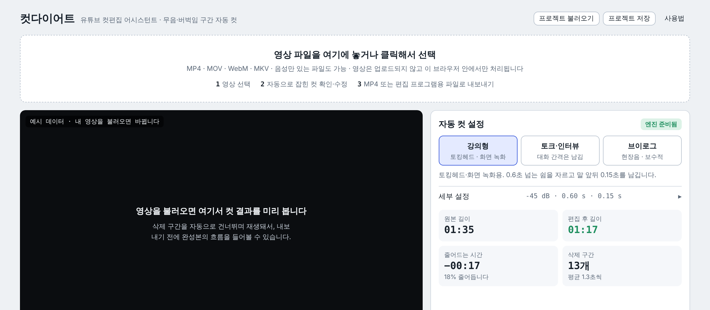
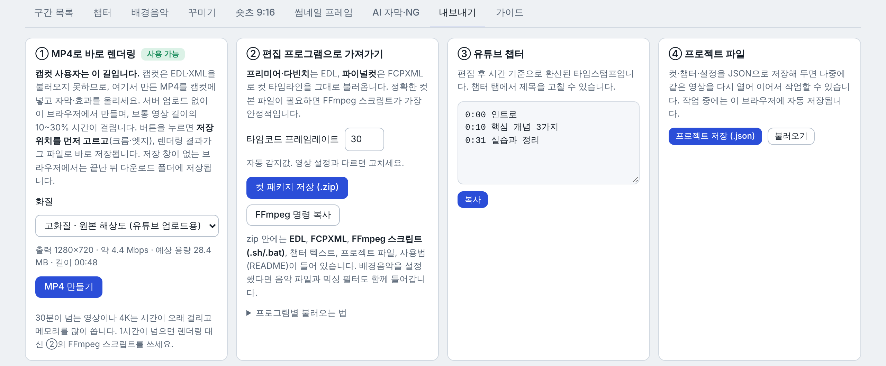
들으면서 어색한 자리에 멈추고 키 하나를 누르는 게 전부입니다. 타임라인을 클릭하면 그 위치로 가고, 더블클릭하면 그 구간이 유지↔삭제로 바뀝니다. 구간 경계선은 드래그해서 미세 조정합니다.
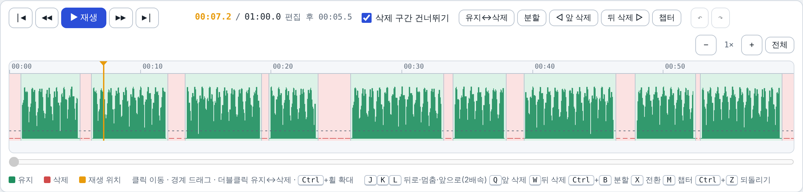
| 키 | 동작 | 이럴 때 |
|---|---|---|
| Space | 재생 / 일시정지 | |
| J K L | 뒤로 / 멈춤 / 앞으로 (한 번 더 누르면 2배속 → 4배속) | 빠르게 훑어볼 때 |
| Q | 재생 위치 앞부분 삭제 | 말 시작 전 잡담이 남았을 때 |
| W | 재생 위치 뒷부분 삭제 | 말 끝난 뒤 정적이 남았을 때 |
| X | 현재 구간 유지 ↔ 삭제 | 잘못 잘린 구간을 살릴 때 |
| S (또는 Ctrl+B) | 재생 위치에서 구간 나누기 | 구간 일부만 지우고 싶을 때: 나눈 뒤 한쪽을 X |
| Delete | 현재 구간 삭제 | |
| Ctrl+Z | 되돌리기 (Ctrl+Shift+Z 다시 실행) | 뭐든 실수했을 때 |
| ← → | 1초 이동 (Shift 함께: 5초, , .: 1프레임) | |
| [ ] | 이전 / 다음 컷 경계로 | 컷만 빠르게 확인할 때 |
| M | 현재 위치에 챕터 | 내용이 바뀔 때마다 |
맥에서는 Ctrl 대신 ⌘도 됩니다. 한글 입력 상태여도 단축키는 그대로 작동합니다.
대부분은 프리셋만 고르면 됩니다. 세부 설정은 "세부 설정"을 펼치면 나옵니다.
| 증상 | 바꿀 것 |
|---|---|
| 말 첫 음절이 자꾸 잘린다 | 말 앞뒤 여백을 0.25초로, 말소리 기준을 낮춰서(-48) |
| 숨소리·잡음까지 남는다 | 말소리 기준을 올려서(-36) |
| 짧은 쉼까지 다 잘려 숨 가쁘다 | 프리셋을 토크·인터뷰로, 또는 구간 목록 탭의 "0.4초 미만 삭제 구간 되살리기" |
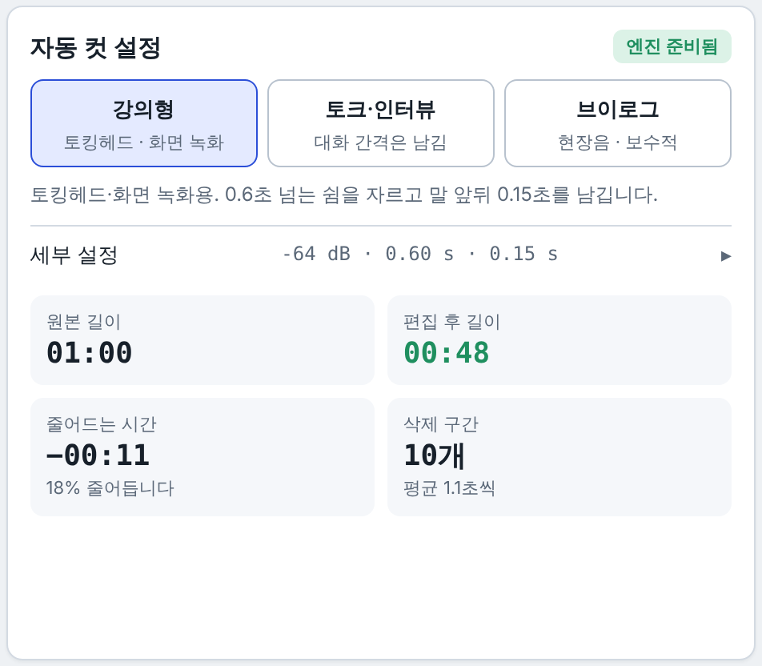
캡컷으로 자막과 효과를 꾸미는 분은 MP4만 가져가면 됩니다. 캡컷 없이 끝내고 싶으면 AI 자막과 꾸미기 탭을 추가로 쓰면 됩니다.
캡컷은 EDL·XML 파일을 못 받으므로 "컷 패키지 zip"은 캡컷 사용자에겐 필요 없습니다. 프리미어·다빈치·파이널컷 사용자만 씁니다.
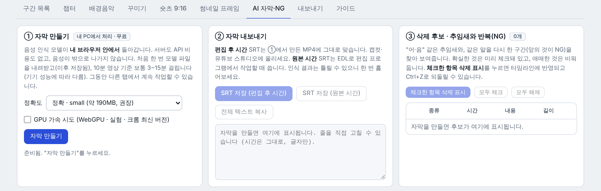
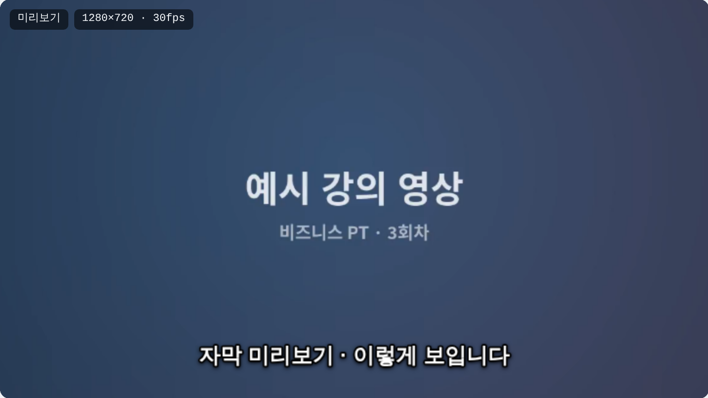
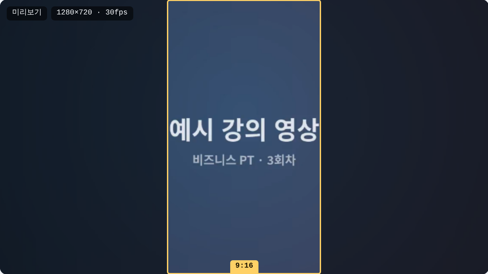
컷 작업이 익숙해진 뒤 필요한 탭만 열어 쓰면 됩니다.
| 탭 | 쓰는 때 | 핵심 버튼 |
|---|---|---|
| 구간 목록 | 어떤 구간이 지워지는지 표로 확인할 때 | 상태 버튼(유지/삭제 전환), 0.4초 미만 삭제 구간 되살리기 |
| 챕터 | 유튜브 설명란 타임스탬프 | 재생 중 M → 제목 입력 → 복사. 편집 후 시간으로 자동 환산 |
| 배경음악 | 음악을 깔 때 | 음악 파일 선택 → 음량(15~25% 권장) → 덕킹 켜기. 미리보기에서 같이 들림 |
| 꾸미기 | 자막 굽기, 줌, 페이드, 효과음, 이미지·텍스트 | 자동 줌 켜기(점프컷 숨김), 현재 위치에 효과음, 이미지 추가(범위 "영상 전체"로 두면 워터마크) |
| 숏츠 9:16 | 같은 영상에서 세로 숏츠를 뽑을 때 | 시작/끝 "현재 위치로" → 미리보기의 노란 틀 드래그 → 숏츠 MP4 만들기 |
| 썸네일 프레임 | 썸네일 후보 사진이 필요할 때 | 후보 프레임 뽑기 → 마음에 드는 장면 JPG 저장 |
| AI 자막·NG | 자막 파일, 추임새·NG 정리 | 자막 만들기 → SRT 저장(편집 후 시간) → 후보 체크 후 삭제 표시 |
| 내보내기 | 결과물 | MP4 만들기, (편집 프로그램 사용자는) 컷 패키지 zip, 프로젝트 저장 |
| 가이드 | 단축키·촬영 습관 7가지·FAQ |
프로젝트 저장(.json)은 다른 컴퓨터에서 이어서 작업할 때만 필요합니다. 같은 컴퓨터에서는 같은 영상을 다시 열면 이전 작업을 복구할지 물어봅니다.
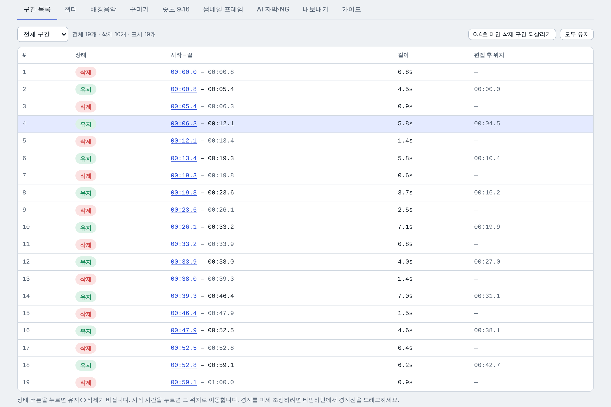
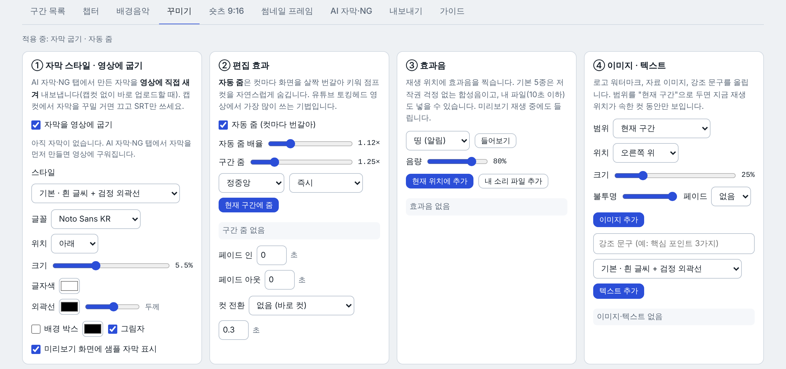
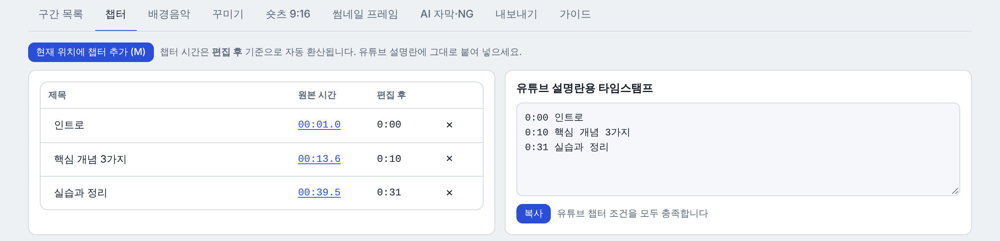
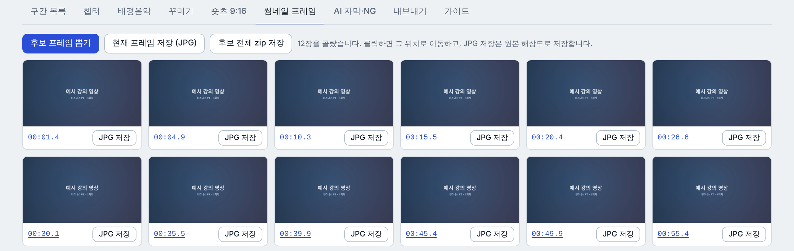
| 증상 | 조치 |
|---|---|
| "이 파일을 분석하지 못했습니다" | 카메라 원본 코덱을 브라우저가 못 읽는 경우. 휴대폰·카메라 설정에서 "호환성 우선(H.264)"으로 촬영하거나, 한 번 MP4(H.264)로 변환해 넣으세요 |
| 분석은 되는데 화면이 검은색 | 브라우저가 재생만 못 하는 형식. 컷·내보내기는 그대로 되고, 들어보려면 MP4(H.264)로 변환 |
| MP4 만들기 버튼이 회색 | 버튼 위 회색 글씨에 이유가 적혀 있습니다. 대개 "크롬·엣지 데스크톱에서 열기" 또는 "1시간 초과" |
| 저장 창을 닫았더니 렌더링이 시작되지 않는다 | 정상입니다. 저장 위치를 고르지 않으면 렌더링을 시작하지 않습니다. MP4 만들기를 다시 누르세요 |
| 렌더링이 중간에 실패 | 화질을 1080p나 720p로 낮춰 다시. 다른 탭·프로그램을 닫으면 메모리가 늘어납니다 |
| 저장 창이 안 뜨고 파일도 없다 | 저장 창이 없는 브라우저(사파리·파이어폭스)에서는 다운로드로 저장됩니다. 주소창 오른쪽 다운로드 아이콘을 확인하고, 없으면 "다시 저장" 클릭 |
| 말이 중간에 잘린다 / 숨소리가 남는다 | 3장의 설정 표 참고 |
| AI 자막이 너무 오래 걸린다 | "빠름 · base" 모델로 바꾸거나 GPU 가속 체크(최신 크롬). 처음 한 번은 모델 다운로드 시간이 더해집니다 |
| AI 자막에 없는 말이 들어간다 | 음성 인식의 한계입니다. 미리보기 칸에서 직접 고치세요. 무음 구간의 헛소리는 자동으로 걸러집니다 |
| 배경음악이 다음에 열면 사라져 있다 | 음악 파일은 브라우저에 저장되지 않습니다. 다시 선택하면 음량·덕킹 설정은 그대로 있습니다 |
| 이전 작업을 이어서 하고 싶다 | 같은 컴퓨터: 같은 영상을 다시 열면 복구 여부를 묻습니다. 다른 컴퓨터: 프로젝트 저장(.json) 후 불러오기 |
| 영상이 어디에 저장되나 | 저장되지 않습니다. 브라우저 탭을 닫으면 영상은 메모리에서 사라지고, 컷 정보만 남습니다 |
| 정확한 프레임 단위인가 | MP4 렌더는 프레임 단위로 정확합니다. EDL은 프레임레이트 설정이 영상과 같아야 합니다 |
이 도구는 회원들의 사용 기록으로 고쳐 나갑니다. 한 줄이면 충분합니다.
[길이]분 [종류] 영상, [기능]에서 [증상], [걸린 시간] 예) 12분 강의 영상, MP4 렌더 4분, 말 첫 음절이 세 군데 잘림
증상은 해석하지 말고 보인 그대로 적어 주세요. 화면 위 회색 안내 문구나 오류 메시지가 있으면 그 문장도 같이. 어떤 브라우저(크롬/엣지)인지도 한 단어로.
컷다이어트 v2.2 · cutdiet.vercel.app · 영상은 업로드되지 않고 내 브라우저 안에서만 처리됩니다. 음성 인식에는 Whisper(MIT), 영상 처리에는 mediabunny(MPL-2.0)·transformers.js(Apache-2.0)가 쓰였습니다.